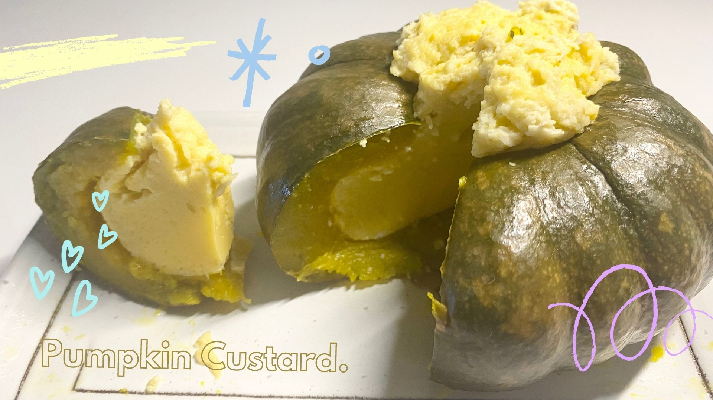
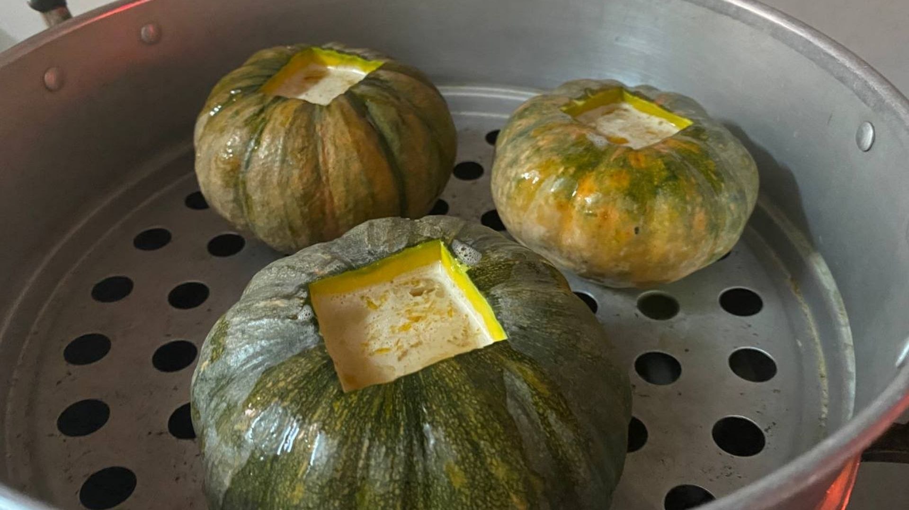
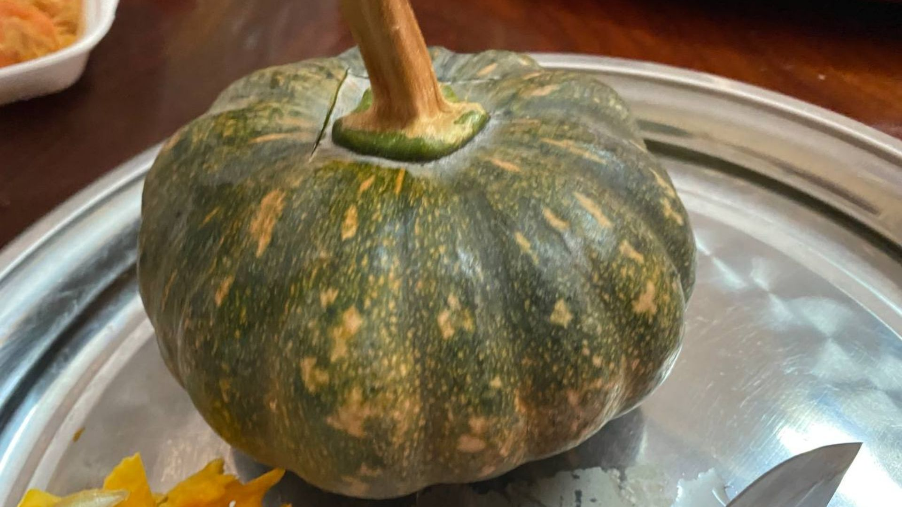
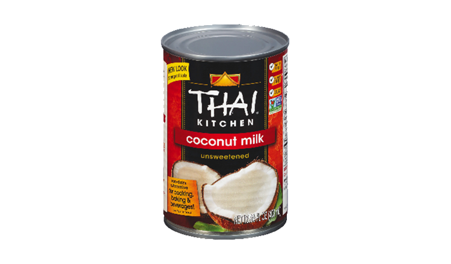

Song Kya.
The custard has a delicate texture and is rich, creamy, and sweet. Song Kya L'peov or Cambodian Pumpkin Custard is a delicate dessert served on special occasions and festivities, but it's also a great sweet treat for a hearty meal at any time.
Ingredients.
- 5 small pumpkins
- 12 Eggs
- 4 Pandan Leaves
- 1 tsp of salt
- 200 ml Coconut milk
- 150g palm sugar (could possibly be more or less)

cooking...

small pumpkin

coconut milk

palm sugar
Instructions.
- First, carve out the lids of the pumpkins. Use a spoon to hollow out all the seeds inside. (you can keep the lids to eat if you prefer)
- After that, rinse those seedless pumpkins with water to make it keep it clean for the custard. Let them sit and dry out.
- To make the custard, crack all eggs into a mixing bow. Stir it entirely till there's no egg white left.
- Add in 1 tbsp of salt, then add in the amount of palm sugar suggested in the ingredient section. Stir it until it's fully dissolved.
- Add in the coconut milk/paste and mix it well.
- Cut the Pandan leaves into small pieces and squeeze it into the mixture until it smells and tastes like the leaves. You can take those leaves out afterwards.
- Using a suitable-sized strainer, strain the entire mixture to achieve a good-textured custard in the end. Then, the custard mixture is done.
- Now, put the seedless pumpkins into a steaming pot and pour the mixture into each pumpkins. Don't fill it all the way up since the custard will rise and fluff on its own while steaming. (you cant steam the leftover lids from before as well)
- In a typical steaming pot that each Cambodian household owns, there are two layers. The pumpkins should be placed in the first layer of the pot. As for the second layer, add in water that fills in half of the that layer of the entire pot and boil it.
- While the water is boiling, add the first layer of the pot where the pumpkins are placed and steam it for 30 to 40 minutes using medium heat. (it depends on the size your pumpkins)
- Now, the pumpkin custard is read to enjoy!